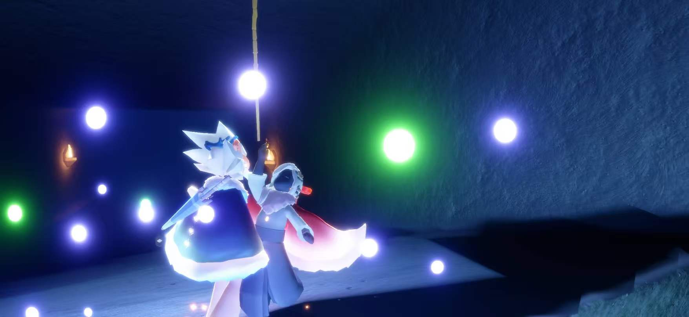

一份只属于你的心意
嗨，
全世界最聪明
的小羊
全世界最聪明的小羊的专属网络小屋
给你一段大约两分钟的小旅程，
从想念出发，走到心里。
准备好拆开了吗？
第 一 站 · 想 念
有些想念，
真的藏不住。
全世界最聪明的小羊，今天也想把这些话说给你听。
有时候只是看见一点小小的美好，
就会想：要是你也在这里就好了。
看见晚霞，听见一首温柔的歌，
都想把那一刻的心情分享给你。
忙完一天，会想知道你过得怎么样，
工作顺不顺利，有没有好好吃饭。
想念会悄悄藏在平常的日子里，
让我想把每一份温柔都留给你。
全世界最聪明的小羊，
今天也辛苦了。我很想你。
第 二 站 · 回 忆
和你有关的日子，
都值得珍藏。
轻轻点开每张小卡片，看看我偷偷收好的片段。
第 三 站 · 时 光 相 册
把这些画面，
轻轻收进心里。
六张照片，六次心动。点小照片，慢慢翻阅。

01 / 06
夜里的光
光点把夜色点亮，也把这一刻留在心里。
点照片看看下一张
第七张照片，是你看到这里时笑起来的样子。
这张只存在我心里，最舍不得弄丢。
第 四 站 · 关 心
想把一点点温柔，
放进你的每一天。
给全世界最聪明的小羊的三张小纸条。
忙到忘记抬头时，记得喝口水、看看窗外。
如果偶尔累了，就让我多关心你一点。
第 五 站 · 秘 密 测 试
等等，先做一道
超简单的题。
专属小测试 · 只有一道题
全世界最聪明的小羊，
今天有多想我？
放心，怎么回答都是满分。
最 后 一 站 · 给 你
这封信的答案，
一直都是你。
致全世界最聪明的小羊：
高中时送你回家的那段路，我还记得。高一时在教室走廊寻找你身影的心情，我也还记得。那些平常的瞬间，在我心里一直很珍贵。
如今想起你，我会惦记你的工作顺不顺利，今天有没有好好吃饭，身体是不是舒服。希望你忙碌时也记得休息，开心时能尽情地笑。
如果哪天很累，就慢一点。你不用每一天都做到满分；照顾好自己，对我来说就已经很重要。
往后的普通日子，我也想认真地惦记你。哪怕没有特别的节日，也想问你一句：今天过得好吗？
我很想你，也很在乎你。
还有好多话想慢慢说给你听。现在，先送你一个大大的拥抱。
一直想着你的人 ♡